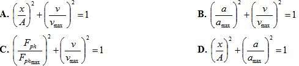
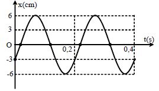

Đề môn Vật Lý số 9
SỞ GD&ĐT BẮC GIANG TRƯỜNG THPT NGÔ SĨ LIÊN
90
:phút
00
:giây
Ghi Chú
Câu 1
Một người xách một xô nước đi trên đường, mỗi bước đi dài 40cm. Chu kì dao động riêng của nước trong xô là 0,2s. Để nước trong xô sóng sánh mạnh nhất thì người đó phải đi với vận tốc là
A: 200 (m/s).
B: 2 (m/s).
C: 7,2 (m/s).
D: 8 (m/s).
Câu 2
Cơ năng của một vật dao động điều hòa
A: tăng gấp đôi khi biên độ dao động của vật tăng gấp đôi.
B: bằng động năng của vật khi vật tới vị trí cân bằng.
C: biến thiên tuần hoàn theo thời gian với chu kỳ bằng một nửa chu kỳ dao động của vật.
D: biến thiên tuần hoàn theo thời gian với chu kỳ bằng chu kỳ dao động của vật.
Câu 3
Một vật dao động điều hòa có chu kì 2 s, biên độ 10 cm. Khi vật cách vị trí cân bằng 6 cm, tốc độ của nó bằng
A: 25,13 (cm/s)
B: 12,56 (cm/s)
C: 18,84 (cm/s)
D: 20,08 (cm/s)
Câu 4
Trong dao động điều hòa, gia tốc biến thiên
A: sớm pha π/2 so với li độ.
B: cùng pha với li độ.
C: trễ pha π/2 so với vận tốc.
D: cùng pha với hợp lực tác dụng lên vật.
Câu 5
Hiện tượng cộng hưởng xảy ra khi
A: tần số của lực cưỡng bức bằng tần số riêng của hệ.
B: tần số dao động bằng tần số riêng của hệ.
C: tần số của lực cưỡng bức nhỏ hơn tần số riêng của hệ.
D: tần số của lực cưỡng bức lớn hơn tần số riêng của hệ.
Câu 6
Trong dao động điều hòa của vật biểu thức nào sau đây là
sai?

A
B
C
D
Câu 7
Một vật dao động với phương trình x = 2sin(2πt + π/3) cm. Biên độ dao động của vật là
A: 2 cm.
B: 2π (rad/s).
C: π/3 (rad).
D: 2 m .
Câu 8
Một vật dao động tuần hoàn cứ mỗi ngày thực hiện được 43200 dao động toàn phần. Chu kì dao động của vật là
A: 2 s.
B: 0,5 s.
C: 86400 s.
D: 21600 s
Câu 9
Một con lắc lò xo có độ cứng 36 N/m và vật nhỏ khối lượng 100g dao động điều hòa. Lấy π
2
= 10. Động năng của con lắc biến thiên theo thời gian với tần số là
A: 1 Hz.
B: 3 Hz.
C: 6 Hz.
D: 12 Hz.
Câu 10
Khi nói về dao động điều hòa, phát biểu nào sau đây đúng?
A: Hợp lực tác dụng lên vật sẽ đổi chiều khi vật tới vị trí biên.
B: Hợp lực tác dụng lên vật luôn hướng về vị trí cân bằng.
C: Gia tốc luôn cùng chiều vận tốc khi đi từ vị trí cân bằng ra biên.
D: Vật chuyển động nhanh dần đều khi đi từ biên về vị trí cân bằng.
Câu 11:
Điều kiện để con lắc đơn dao động điều hòa là
A: con lắc đơn phải được đặt trên Trái đất.
B: bỏ qua mọi ma sát và biên độ góc phải đủ nhỏ.
C: bỏ qua mọi ma sát.
D: biên độ góc phải đủ nhỏ.
Câu 12:
Một con lắc lò xo treo thẳng đứng gồm lò xo độ cứng k và vật nặng khối lượng m. Nếu tăng độ cứng lò xo lên 2 lần và giảm khối lượng của vật 2 lần thì chu kỳ dao động của con lắc sẽ
A: không thay đổi.
B: tăng 2 lần.
C: tăng 4 lần.
D: giảm 2 lần.
Câu 13:
Một vật nhỏ dao động điều hòa với biên độ 4cm và chu kì 2s. Quãng đường vật đi được trong một chu kì là
A: 64 cm.
B: 8 cm.
C: 16 cm.
D: 32 cm.
Câu 14:
Con lắc lò xo gồm vật nặng khối lượng m = 100g và lò xo có độ cứng k = 100N/m. Lấy π
2
= 10, chu kì dao động của con lắc là
A: T = 0,4 s.
B: T = 0,3 s.
C: T = 0,2 s.
D: T = 0,1 s.
Câu 15:
Một vật thực hiện đồng thời hai dao động điều hòa cùng phương, cùng tần số, có biên độ lần lượt là 8cm và 4 cm. Biên độ dao động tổng hợp có thể nhận giá trị bằng
A: 10 cm
B: 2 cm
C: 14 cm
D: 3 cm
Câu 16:
Một vật dao động điều hòa với chu kỳ T thì pha của dao động
A: tỉ lệ bậc nhất với thời gian.
B: không đổi theo thời gian.
C: để xác định trạng thái ban đầu của dao động
D: biến thiên điều hòa theo thời gian.
Câu 17:
Một con lắc lò xo nằm ngang dao động tự do với biên độ 8 cm. Lực đàn hồi của lò xo có công suất tức thời đạt giá trị cực đại khi vật đi qua vị trí có toạ độ x bằng.
A: là dạng hình sin.
B: đoạn thẳng nghịch biến qua gốc tọa độ.
C: dạng elip.
D: đoạn thẳng đồng biến qua gốc tọa độ.
Câu 18:
Một vật nhỏ dao động điều hòa theo một quỹ đạo thẳng dài 12 cm. Dao động này có biên độ là
A: 3 cm
B: 6 cm
C: 24 cm
D: 12 cm
Câu 19:
Một vật dao động điều hoà x = 4sin(πt + π/4) cm. Lúc t = 0,5s vật có li độ là
A: x = 4 cm.
B: x = 2√2 cm.
C: x = -2√2 cm.
D: x = 2 cm.
Câu 20:
Một con lắc lò xo có khối lượng vật nhỏ là dao động điều hòa với chu kì 1s. Nếu thay vật nhỏ có khối lượng m
1
bằng vật nhỏ có khối lượng m
2
thì con lắc dao động với chu kì 0,5s. Giá trị m
2
là
A: 75 g
B: 150 g
C: 1200 g
D: 600 g
Câu 21:
Chọn phát biểu đúng khi nói về dao động cưỡng bức
A: Tần số của dao động cưỡng bức là tần số dao động riêng.
B: Tần số của dao động cưỡng bức là tần số của ngoại lực tuần hoàn.
C: Biên độ của dao động cưỡng bức là biên độ của ngoại lực tuần hoàn.
D: Biên độ dao động cưỡng bức chỉ phụ thuộc vào tần số của ngoại lực tuần hoàn.
Câu 22:
Một vật dao động tắt dần có các đại lượng nào sau đây giảm liên tục theo thời gian?
A: Li độ và tốc độ.
B: Biên độ và tốc độ.
C: Biên độ và cơ năng.
D: Biên độ và gia tốc.
Câu 23:
Gia tốc trong dao động điều hòa có biểu thức:
A: a = ω
2
x
B: a = - ωx
2
C: a = - ω
2
x
D: a = ω
2
x
2
.
Câu 24:
Một con lắc đơn có chiều dài 144cm, dao động điều hòa tại nơi có gia tốc trọng trường g = π
2
(m/ s
2
) . Chu kì dao động của con lắc là
A: 24 s
B: 2,4 s
C: 16,4 s
D: 1,2 s
Câu 25:
Hai dao động điều hoà lần lượt có phương trình: x1 = A1cos(20 π t + π /2) cm và x
2
= A2cos(20 π t + π /6) cm. Phát biểu nào sau đây là đúng
A: Dao động thứ nhất sớm pha hơn dao động thứ hai một góc π/3 (rad).
B: Dao động thứ nhất trễ pha hơn dao động thứ hai một góc π /3 (rad).
C: Dao động thứ hai trễ pha hơn dao động thứ nhất một góc π/6 (rad).
D: Dao động thứ nhất nhanh pha hơn dao động thứ hai một góc π/2 (rad).
Câu 26:
Một con lắc đơn dao động điều hòa với chu kì T tại nơi có gia tốc trọng trường g = 9,8m/s2. Nếu tăng hoặc giảm chiều dài con lắc cùng một đoạn 14cm thì chu kì dao động điều hòa tương ứng là T
1
và T
2
biết T
1
= 4T
2
/3. Chu kì dao động T bằng:
A: 1,236 s
B: 1,823 s
C: 1,419 s
D: 1,568 s
Câu 27:
Hai con lắc đơn dao động tại cùng một nơi trên trái đất. Con lắc đơn chiều dài ℓ
1
dao động với chu kỳ T
1
, con lắc đơn có chiều dài ℓ
2
> ℓ
1
thì dao động với chu kỳ T
2
. Khi con lắc đơn có chiều dài bằng hiệu chiều dài của hai con lắc sẽ dao động với chu kỳ là
A: T
2
= T
1
2
-T
2
2
B: T
2
= (T
1
2
xT
2
2
)/(T
1
2
- T
2
2
)
C: T = T
2
- T
1
D: T
2
= T
2
2
-T
1
2
Câu 28:
Một chất điểm khối lượng m chuyển động trên trục ox với phương trình x = Acos
2
(ωt + φ ) . Vật này dao động tuần hoàn với
A: vận tốc cực đại A
ω
B: gia tốc cực đại Aω
2
C: biên độ A
D: chu kì 2π/ω.
Câu 29:
Một vật dao động điều hòa, mỗi phút thực hiện được 150 dao động toàn phần. Lúc t = 0, vật đi qua vị trí có li độ -2cm và đang đi về phía biên gần nhất với tốc độ bằng 10π(cm/s). Phương trình dao động của vật là
A: x = 2√2 cos(5πt + 3π/4) cm.
B: x = 4cos(5πt + π/4) cm.
C: x = 2√2 cos(5πt - 3π/4) cm.
D: x = 2cos(5πt + π/4) cm.
Câu 30:
Một con lắc lò xo treo thẳng đứng với khối lượng của vật là 100 g. Kéo vật theo phương thẳng đứng xuống dưới đến vị trí lò xo giãn 7,9 cm rồi buông nhẹ để nó dao động điều hòa xung quanh vi trí cân bằng với cơ năng 9 mJ. Lấy g = 9,8 m/s 2 . Độ cứng của lò xo là
A: 20 N/m
B: 7,69 N/m
C: 40 N/m
D: 0,02 N/m
Câu 31:
Một vật thực hiện đồng thời hai dao động điều hoà cùng phương, cùng tần số có phương trình dao động là x1 = √2 cos(2t + π /3) cm và x2 = √2 cos(2t -π /6) cm. Phương trình dao động tổng hợp là
A: x = 2√3 cos(2t + π/3) cm.
B: x = √2cos(2t - π /6) cm.
C: x = 2 cos(2t + π/6) cm.
D: x = 2cos(2t + π /12) cm.
Câu 32:
Con lắc lò xo dao động theo phương nằm ngang với biên độ 8 cm, chu kỳ 0,5s. Khối lượng của vật là 0,4 kg. Lấy g = π
2
=10 m/s
2
. Giá trị cực đại của lực đàn hồi tác dụng vào vật là
A: 512 N.
B: 5,12 N.
C: 912 N.
D: 9,12 N.
Câu 33:
Một vật có khối lượng 1 kg dao động điều hòa theo phương trình x = 10cos(πt - π/2 ) (cm) 2 . Coi π
2
=10 . Lực kéo về ở thời điểm t = 0,5 s bằng
A: 0
B: 1 N
C: 100 N
D: 10 N
Câu 34:
Một con lắc đơn có độ dài 120 cm. Người ta thay đổi độ dài của nó sao cho chu kì dao động mới chỉ bằng 90% chu kì dao động ban đầu. Độ dài mới là
A: 97,2cm.
B: 148,148cm.
C: 108cm.
D: 133,33cm.
Câu 35:
Một quả cầu khối lượng m treo vào một lò xo có độ cứng k. Kích thích cho vật dao động với biên độ 5cm thì nó dao động với tần số f = 2,5Hz . Nếu kích thích cho vật dao động với biên độ 10cm thì tần số dao động của nó có thể nhận giá trị nào trong các giá trị sau?
A: 0,6 Hz
B: 5 Hz
C: 2,5 Hz
D: 1,25 Hz.
Câu 36:
Con lắc lò xo nằm ngang dao động điều hòa với chiều dài lò xo biến thiên từ 52 cm đến 64 cm. Thời gian ngắn nhất chiều dài lò xo giảm từ 64 cm đến 61 cm là 0,3 s. Thời gian ngắn nhất để chiều dài lò xo tăng từ 55cm đến 58cm là
A: 0,6 s.
B: 0,3 s.
C: 0,15 s
D: 0,45 s.
Câu 37:
Một anten parabol, đặt tại điểm O trên mặt đất, phát ra một sóng truyền theo phương làm với mặt phẳng nằm ngang một góc 45
0
hướng lên cao. Sóng này phản xạ trên tầng điện li, rồi trở lại gặp mặt đất ở điểm M. Biết bán kính Trái Đất R = 6400 km, tầng điện li coi như một lớp cầu ở độ cao 100 km so với mặt đất. Độ dài cung OM bằng
A: 390 km
B: 3456 km
C: 1728 km
D: 195 km
Câu 38:
Một dây đàn bằng thép có đường kính d = 0,4mm, chiều dài l = 50 cm, khối lượng riêng của thép là D = 7800 kg/m
3
. Lực căng dây để âm cơ bản mà nó phát ra là một nốt đô có tần số 256Hz là
A: 29,3 N
B: 32,7 N
C: 64,2 N
D: 128,0 N
Câu 39:
Chọn câu đúng. Trong "máy bắn tốc độ" xe cộ trên đường:
A: có cả máy phát và máy thu sóng vô tuyến.
B: chỉ có máy thu sóng vô tuyến.
C: chỉ có máy phát sóng vô tuyến.
D: không có máy phát và máy thu sóng vô tuyến.
Câu 40:
Trong một môi trường đẳng hướng và không hấp thụ âm có 3 điểm thẳng hàng theo đúng thứ tự A, B, C, một nguồn điểm phát âm công suất P đặt tại điểm O, di chuyển một máy thu âm từ A đến C thì thấy rằng : mức độ âm tại B lớn nhất và bằng L
B = 46,02 dB còn mức cường độ âm tại A và C là bằng nhau và bằng L
A
= L
C
= 40dB. Bỏ qua nguồn âm tại O, đặt tại A một nguồn điểm phát âm công suất P’, để mức độ cường âm tại B vẫn không đổi thì :
A: P’ = P/3
B: P’ = 3P
C: P’ = P/5
D: P’ = 5P.
Câu 41:
Một vật dao động điều hòa với biên độ A = 5 cm, khi vật có li độ 2,5cm thì tốc độ của vật là 5√3 cm/s. Hãy xác định vận tốc cực đại của dao động?
A: 10 m/s
B: 8 cm/s
C: 10 cm/s
D: 8 m/s
Câu 42:
Trong mạch dao động LC lí tưởng có dao động điện từ tự do thì
A: năng lượng điện trường tập trung ở cuộn cảm.
B: năng lượng điện trường và năng lượng từ trường luôn không đổi.
C: năng lượng từ trường tập trung ở tụ điện.
D: năng lượng điện từ của mạch được bảo toàn.
Câu 43:
Khi có sóng dừng trên một sợi dây đàn hồi, khoảng cách từ một bụng đến nút gần nó nhất bằng
A: một nửa bước sóng.
B: một số nguyên lần bước sóng.
C: một phần tư bước sóng.
D: một bước sóng.
Câu 44:
Mạch dao động điện từ lí tưởng gồm cuộn thuần cảm và hai tụ điện giống nhau mắc nối tiếp,hai bản của một tụ được nối với nhau bằng một khóa K. Ban đầu khóa K mở, cung cấp năng lượng cho mạch dao động thì điện áp cực đại giữa 2 đầu cuộn dây là 8√6 V. Sau đó đúng vào lúc thời điểm dòng điện qua cuộn dây có cường độ bằng giá trị hiệu dụng thì đóng khóa K .Điện áp cực đại giữa 2 đầu cuộn dây sau khi K đóng là
A: 9 V
B: 10 V
C: 12 V
D: 6 V
Câu 45:
Trong sơ đồ của một máy phát sóng vô tuyến điện, không có mạch (tầng)

A: tách sóng
B: khuếch đại
C: phát dao động cao tần
D: biến điệu
Câu 46:
Một mạch dao động LC lí tưởng, gồm cuộn cảm thuần có độ tự cảm L và tụ điện có điện dung C. Trong mạch có dao động điện từ tự do. Gọi U
0
, I
0
lần lượt là hiệu điện thế cực đại giữa hai đầu tụ điện và cường độ dòng điện cực đại trong mạch thì
A: U
0
= I
0
/√(L/C)
B: U
0
= I
0
√(L/C)
C: U
0
= I
0
√(C/L)
D: U
0
= I
0
√(L/C)
Câu 47:
Một mạch dao động điện từ LC lí tưởng gồm cuộn cảm thuần độ tự cảm L và tụ điện có điện dung thay đổi được từ C1 đến C2. Mạch dao động này có chu kì dao động riêng thay đổi được.
A: từ 4π√(LC
1
) đến 4π√(LC
2
)
B: từ 2π√(LC
1
) đến 2π√(LC
2
)
C: từ 2√(LC
1
) đến 4√(LC
2
)
D: từ 4√(LC
1
) đến 4√(LC
2
)
Câu 48:
Một con lắc lò xo treo thẳng đứng gồm vật nhỏ m gắn vào một đầu lò xo có chiều dài lo thì dao động điều hòa với chu kì To = 1,5 s. Cắt bỏ chiều dài lò xo này đi lo/3 thì khi treo vật m vào, hệ sẽ dao động với chu kì T bằng bao nhiêu
A: 1,225s
B: 0,577s
C: 1,73s
D: 1s
Câu 49:
Một vật nhỏ có khối lượng 100g dao động điều hòa với chu kì 0,5π s và biên độ 3cm. Chọn mốc thế năng tại vi trí cân bằng, cơ năng của vật là
A: 0,18 mJ
B: 0,36 mJ
C: 0,48 mJ
D: 0,72 mJ
Câu 50:
Tại hai điểm A và B trên mặt nước cách nhau 16cm có hai nguồn sóng giống nhau. Điểm M nằm trên mặt nước và trên đường trung trực của AB cách trung điểm I của AB một khoảng nhỏ nhất bằng 4√5 cm luôn dao động cùng pha với I. Điểm N nằm trên mặt nước và nằm trên đường thẳng vuông góc với AB tại A, cách A một khoảng nhỏ nhất bằng bao nhiêu để N dao động với biên độ cực tiểu?
A: 9,22cm
B: 7,75cm
C: 2,14cm
D: 8,57cm
Correct answers: